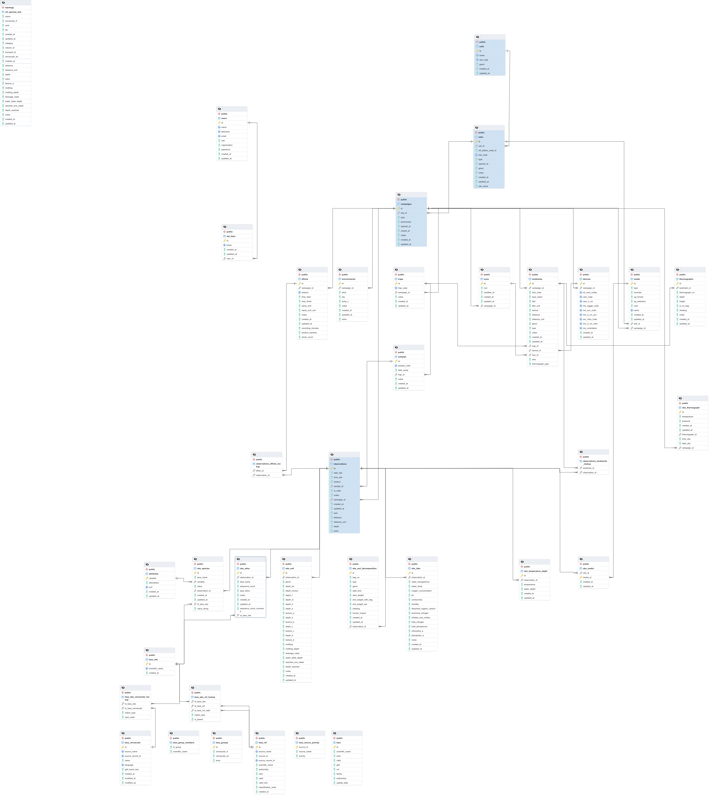

Structure

Champs communs à la plupart des tables
Les champs en gras sont obligatoires
| Champs | Type | Description | Options |
|---|---|---|---|
| id | nombre entier | Identifiant unique | |
| created_at | date-heure | Date et heure de création | |
| updated_at | date-heure | Date et heure de mise à jour |
Cellules
Nom de la table : cells
Point d’accès : /api/v1/cells
Inclus dans les résultats : sites
| Champs | Type | Description | Options |
|---|---|---|---|
| name | texte | Nom de la cellule | |
| cell_code | texte | Code de la cellule | |
| geom | geometry | Localisation de la cellule |
Sites
Nom de la table : sites
Point d’accès : /api/v1/sites
Inclus dans les résultats : campaigns, cells
| Champs | Type | Description | Options |
|---|---|---|---|
| cell_id | nombre entier | Identifiant de la cellule | |
| off_station_code_id | texte | ||
| site_code | texte | Identifiant unique du site | |
| site_name | texte | Nom du site. Par exemple, le nom du lac. | |
| type | choix | Type d’inventaire réalisé sur le site | ‘lac’, ‘rivière’, ‘forestier’, ‘marais’, ‘milieu humide côtier’, ‘toundrique’, ‘tourbière’ |
| opened_at | date | Date de l’ouverture du site | |
| geom | geometry | Localisation du site | |
| notes | texte | Commentaires |
Campagnes
Nom de la table : campaigns
Point d’accès : /api/v1/campaings
Inclus dans le résultat : efforts, environments, devices, lures, landmarks(+thermographs), traps
| Champs | Type | Description | Options |
|---|---|---|---|
| site_id | texte | Identifiant unique du site attaché à la campagne d’échantillonnage | |
| type | choix | Le type campagne réalisé | ‘végétation’, ‘végétation_transect’, ‘sol’, ‘décomposition_sol’, ‘acoustique_chiroptères’,‘acoustique_oiseaux’,‘acoustique_anoures’,‘acoustique_orthoptères’, ‘phénologie’, ‘mammifères’, ‘papilionidés’, ‘odonates’, ‘insectes_sol’, ‘ADNe’,‘zooplancton’, ‘thermographe’ |
| technicians | ARRAY(texte) | Noms des technicien(ne)s | |
| opened_at | date | Date d’ouverture de la campagne d’échantillonnage | |
| closed_at | date | Date de fermeture de la campagne d’échantillonnage | |
| notes | texte | Commentaires |
Efforts
Nom de la table : efforts
Point d’accès : /api/v1/efforts
| Champs | Type | Description | Options |
|---|---|---|---|
| campaing_id | nombre entier | Numéro d’identification de la campagne | |
| stratum | choix | Strate de végétation concernée par l’effort d’échantillonage | ‘arbres’, ‘arbustes/herbacées’, ‘bryophytes’ |
| time_start | date et heure | Date et heure de début de l’inventaire | |
| time_finish | date et heure | Date et heure de fin de l’inventaire | |
| samp_surf | nombre décimal | Taille de la surface d’échantillonage | |
| samp_surf_unit | choix | Unité de mesure utilisé pour la surface d’échantillonnage | ‘cm2’, ‘m2’, ‘km2’ |
| recording_minutes | nombre entier | Nombre de minutes d’enregistrement | |
| fraction_benthos | nombre décimal | Fraction de l’échantillon de benthos analysé | 0-1 |
| photo_count | nombre entier | Nombre de photos | |
| notes | texte | Commentaires |
Environnements
Nom de la table : environments
Point d’accès : /api/v1/environment
| Champs | Type | Description | Options |
|---|---|---|---|
| campaing_id | nombre entier | Numéro d’identification de la campagne | |
| wind | choix 1-5 | Vent en km/h | ‘1’=‘calme (moins de 1 km/h)’, ‘2’=‘très légère brise (1 à 5 km/h)’, ‘3’=‘légère brise (6 à 11 km/h)’, ‘4’=‘petite brise (12 à 19 km/h)’, ‘5’=jolie brise (20 à 28 km/h)’ |
| sky | choix 1-5 | Allure du ciel | ‘1’=‘dégagé (0 à 10 %)’, ‘2’=‘partiellement nuageux (10 à 50 %)’, ‘3’=‘nuageux (50 à 90 %)’, ‘4’=‘pluvieux’, ‘5’=‘orageux’ |
| temp_c | nombre décimal | Température en celcius | |
| extra | json | Autres valeurs pour des colonnes additionnelles en format json | {“largeur_riviere”: { type: ‘double’, description: ‘Largeur de la rivière’, units: ‘m’, value: 7.12}} |
| notes | texte | Commentaires |
Appareils
Nom de la table : devices
Point d’accès : /api/v1/devices
| Champs | Type | Description | Options |
|---|---|---|---|
| campaing_id | nombre entier | Numéro d’identification de la campagne | |
| sd_card_codes | ARRAY(texte) | Numéro d’identification des cartes SD utilisées | |
| cam_code | ARRAY(texte) | Numéro d’identification de la caméra utilisée | |
| cam_h_cm | nombre décimal | Hauteur de la camera en centimètres | |
| mic_logger_code | texte | Numéro d’identification du enregistreur utilisé | |
| mic_acc_code | texte | Numéro d’identification du microphone accoustique utilisé | |
| mic_h_cm_acc | nombre décimal | Hauteur du microphone ultrason utilisé en centimètres | |
| mic_ultra_code | texte | Hauteur du microphone ultrason utilisé en centimètres | |
| mic_orientation | choix | Orientation du dispositif | ‘n’, ‘s’, ‘e’, ‘o’, ‘ne’, ‘no’, ‘se’, ‘so’ |
Appâts
Nom de la table : lures
Point d’accès : /api/v1/lures
| Champs | Type | Description | Options |
|---|---|---|---|
| lure | nombre entier | Type de leurre ou appât utilisé pour le dispositif | |
| campaign_id | nombre entier | Numéro d’identification de la campagne | |
| installed_at | date | Date d’installation de l’appât/leurre |
Pièges
Nom de la table : traps
Point d’accès : /api/v1/traps
Inclus dans le résultat : landmarks, samples.
| Champs | Type | Description | Options |
|---|---|---|---|
| trap_code | texte | Code du piège | |
| campaign_id | texte | Code d’identification de la campagne | |
| notes | texte | Commentaires |
Repères
Nom de la table : landmarks
Point d’accès : /api/v1/landmarks
Inclus dans le résultat : thermographs
| Champs | Type | Description | Options |
|---|---|---|---|
| campaing_id | nombre entier | Numéro d’identification de la campagne | |
| tree_code | texte | Identifiant unique de l’arbre repère | |
| taxa_name | texte | Espèce de l’arbre repère | |
| dbh | nombre entier | DHP de l’arbre repère | |
| dbh_unit | choix | Unité pour le DHP | ‘mm’,‘cm’,‘m’ |
| axis | choix | L’axe du transect pour la végétation | ‘n’,‘se’,‘so’ |
| azimut | nombre entier | Azimut du dispositif/appât/borne depuis le repère (arbre ou borne), entre 0 et 360 | |
| distance | nombre décimal | Distance du dispositif/appât/borne depuis le repère (arbre ou borne) | |
| distance_unit | choix | Distance du dispositif/appât/borne depuis le repère (arbre ou borne) | ‘mm’,‘cm’,‘m’ |
| geom | geometry(POINT) | Position du repère | |
| type | choix | Type de repère | ‘gps’, ‘arbre’, ‘gps+arbre’, ‘borne_axe’, ‘thermographe’ |
| thermograph_type | choix | Type de thermographe | ‘eau’, ‘eau_extérieur’, ‘sol’, ‘sol_extérieur’, ‘puit_marais’ |
| trap_id | nombre entier | Identifiant du piège | |
| lure_id | nombre entier | Identifiant de l’appât | |
| device_id | nombre entier | Identifiant de l’appareil | |
| notes | texte | Commentaires |
Échantillons
Nom de la table : samples
Point d’accès : /api/v1/samples
| Champs | Type | Description | Options |
|---|---|---|---|
| sample_code | texte | Numéro de l’échantillon | |
| date_samp | date | Date de collecte de l’échantillon | |
| trap_id | nombre entier | Numéro d’identification unique du piège | |
| notes | texte | Commentaires |
Thermographes
Cette table est utilisée pour faire la liste de thermographes pour la température de l’eau et du sol, ainsi que les appareils de profondeur d’eau et température utilisée dans les marais. Cette table est liée et à la table des repères et à la table des obs_thermograph, puisqu’il peut y avoir plusieurs thermographes à un même endroit, et des milliers d’observations pour un même thermographe.
Nom de la table : thermographs
Point d’accès : /api/v1/thermographs
| Champs | Type | Description | Options |
|---|---|---|---|
| landmark_id | nombre entier | Numéro du repère | |
| thermograph_no | texte | Numéro/code du thermographe | |
| depth | nombre décimal | Profondeur dans l’eau ou dans le sol (cm) | |
| height | nombre décimal | Hauteur pour les thermographes extérieurs (cm) | |
| is_on_bag | booléen 1/0 | Est-ce le dernier thermographe sur le sac de la chaîne? | |
| shading | nombre entier | Ombrage de 1 (aucun ombrage) à 5 (complètement ombragé) | |
| notes | texte | Commentaires |
Observations
Nom de la table : observations
Point d’accès : /api/v1/observations
Inclus dans le résultat: media, obs_soil, obs_species, obs_soil_decomposition
Cette table est la table principale qui contient les informations communes à toutes les observations. Dépendamment du type de campagne, les informations complémentaires sont dans les tables obs_*
| Champs | Type | Description | Options |
|---|---|---|---|
| date_obs | date | Date d’observation à l’intérieur de la campagne d’inventaire | |
| time_obs | heure HH:mm:ss | Heure de l’observation à l’intérieur de la campagne d’inventaire | |
| stratum | choix | Strate de végétation inventoriée (spécifique aux campagnes de type végétation) | ‘arborescente’, ‘arbustive’, ‘herbacées’, ‘bryophytes’ |
| axis | choix | L'axe du transect pour la végétation | ‘n’,‘se’,‘so’ |
| distance | nombre décimal | La distance le long du transect pour la végétation | |
| distance_unit | choix | Unité de mesure utilisé pour la distance le long du transect | |
| depth | nombre décimal | Profondeur pour les observations de zooplancton | |
| sample_id | nombre entier | numéro de l’échantillon | |
| is_valid | booléen 1/0 | L’observation est-elle valide? | par défaut: 1 |
| campaign_id | nombre entier | Numéro d’identification de la campagne | |
| campaign_info | champs virtuel | Informations sur la campagne | |
| thermograph_id | nombre entier | Numéro du thermographe | |
| extra | json | Autres valeurs pour des colonnes additionnelles en format json | {“longueur_poisson”: { type: ‘double’, description: ‘Longueur du poisson’, units: ‘cm’, value: 34.2}} |
| notes | texte | Commentaires |
Correspondance observation-effort
Nom de la table : observations_efforts_lookup
Point d’accès : /api/v1/observations_efforts_lookup
Inclus dans le résultat: observations, efforts
| Champs | Type | Description | Options |
|---|---|---|---|
| observation_id | texte | Numéro d’identification de l’observation | |
| effort_id | texte | Numéro d’identification de l’effort |
Correspondance observation-repère
Nom de la table : observations_landmarks_lookup
Point d’accès : /api/v1/observations_landmarks_lookup
Inclus dans le résultat: observations, landmarks
| Champs | Type | Description | Options |
|---|---|---|---|
| observation_id | texte | Numéro d’identification de l’observation | |
| landmark_id | texte | Numéro d’identification du repère |
Observations d’espèces
Nom de la table : obs_species
Point d’accès : /api/v1/obs_species
Inclus dans le résultat: attributes, ref_species
| Champs | Type | Description | Options |
|---|---|---|---|
| taxa_name | texte | Nom complet de l’espèce observée | |
| variable | texte | Référence vers la table d’attributs | |
| value | nombre décimal | Valeur de l’attribut | |
| value_string | texte | Valeur de l’attribut pour les campagnes végétation | |
| observation_id | nombre entier | Identifiant unique de la table d’observations |
Attributs
Nom de la table : attributes
Point d’accès : /api/v1/attributes
| Champs | Type | Description | Options |
|---|---|---|---|
| variable | texte | Nom de la variable attribuée | |
| description | texte | Description de la variable attribuée | |
| unit | texte | Unité de la variable attribuée |
Table de référence des noms d’espèces
Nom de la table : ref_species
Point d’accès : /api/v1/taxa
| Champs | Type | Description | Options |
|---|---|---|---|
| name | texte | Nom scientifique du taxa | |
| vernacular_fr | texte | Nom vernaculaire français de l’espèce | |
| vernacular_en | texte | Nom vernaculaire anglais de l’espèce | |
| rank | choix | Rang taxonomique | ‘sous-embranchement’, ‘embranchement’, ‘sous-classe’, ‘classe’, ‘sous-ordre’, ‘ordre’, ‘super-famille’, ‘famille’, ‘genre’, ‘espèce’,‘sous-espèce’,‘variété’, ‘complexe’,‘genre_hybride’, ‘espèce_hybride’,‘variété_hybride’,‘sous-espèce_hybride’ |
| category | choix | Catégorie d’organisme vivant | ‘poissons’,‘plantes’,‘oiseaux’,‘amphibiens’,‘arthropodes’,‘mammifères’,‘reptiles’,‘autres’,‘mollusques’ |
| tsn | nombre entier | Identifiant ITS (TSN) | |
| vascan_id | nombre entier | Identifiant Vascand pour les plantes | |
| bryoquel_id | nombre entier | Identifiant Bryoquel pour les bryphytes |
Observations de la décomposition du sol (sacs de thé)
Nom de la table : obs_soil_decomposition
Point d’accès : /api/v1/obs_soil_decomposition
| Champs | Type | Description | Options |
|---|---|---|---|
| observation_id | nombre entier | Numéro de l’observation dans la table observation | |
| bag_no | texte | Code du sachet de thé | |
| type | choix | Type de sachet de thé | ‘thé vert’, ‘rooibos’ |
| geom | geometry(POINT) | localisation du sachet | |
| date_end | date | Date de la collecte du sachet de thé. La date de l’observation est la date de la mise en place. | |
| start_weight | nombre décimal | Poids du sachet au départ | |
| end_weight_with_bag | nombre décimal | Poids avec le sachet à la fin | |
| end_weight_tea | nombre décimal | Poids sans le sachet à la fin | |
| shading | nombre entier | Ombrage 1-5 | 1=Aucun ombrage à 5=Complètement ombragé |
| human_impact | nombre entier | Impacts anthropique 1-5 | 1=Aucun impact à 5=Beaucoup d’impacts |
Observations d’ADN Environnemental
Note: Le format des observations d’ADN environnemental est différent des autres observations puisqu’il inclut le numéro du repère, afin de permettre le traitement de multiples repères sur un même lac.
Nom de la table : obs_edna
Point d’accès : /api/v1/obs_edna
| Champs | Type | Description | Options |
|---|---|---|---|
| observation_id | nombre entier | Numéro de l’observation dans la table observation | |
| landmark_id | nombre entier | Numéro du repère | |
| taxa_name | texte | Nom de l’espèce observée | |
| sequence_count | nombre réel | Nombre de séquences | |
| sequence_count_corrected | nombre réel | Nombre de séquences corrigé | |
| type_edna | choix | Catégorie d’observation ADNe | “confirmé”, “probable”, “improbable”, “non-poisson” |
| notes | Texte | Notes |
Observations des condtitions physico-chimiques en lac
Nom de la table : obs_lake
Point d’accès : /api/v1/obs_lake
| Champs | Type | Description | Options |
|---|---|---|---|
| observation_id | nombre entier | Numéro de l’observation dans la table observation | |
| water_transparency | nombre décimal | Transparence dans la colonne d’eau exprimée en mètres à l’aide d’un disque de Secchi | |
| water_temp | nombre décimal | Température de l’eau en degrés Celsius | |
| oxygen_concentration | nombre décimal | Concentration de l’oxygène dans l’eau (mg/L) | |
| ph | nombre décimal | Mesure du pH de l’eau | |
| conductivity | nombre décimal | Conductivité de l’eau en mètres/seconde (m/s) | |
| turbidity | nombre décimal | Turbidité de l’eau en unités de turbidité néphalométriques (uNT) | |
| dissolved_organic_carbon | nombre décimal | Carbone organique dissous (filtré 0,45 µm) | |
| ammonia_nitrogen | nombre décimal | Azote ammonical (filtré ou non) | |
| nitrates_and_nitrites | nombre décimal | Nitrates et nitrites (filtré ou non) | |
| total_nitrogen | nombre décimal | Azote total (filtré ou non) | |
| total_phosphorus | nombre décimal | Phosphore total en trace lac 660 nm ou 660 nm verre | |
| chlorophyl_a | nombre décimal | Chlorophyle A active | |
| pheophytin_a | nombre décimal | Phéophytine A | |
| notes | Texte | Notes |
Observations de profil du sol
Nom de la table : obs_soil
Point d’accès : /api/v1/obs_soil
| Champs | Type | Description | Options |
|---|---|---|---|
| observation_id | nombre entier | Numéro de l’observation dans la table observation | |
| geom | geometry(POINT) | localisation du sachet | |
| depth_tot | nombre décimal | Profondeur du pédon | |
| depth_hummus | nombre décimal | Profondeur de la couche d’humus | |
| depth_f | nombre décimal | Profondeur de la couche organique F | |
| depth_m | nombre décimal | Profondeur de la couche organique M | |
| depth_h | nombre décimal | Profondeur de la couche organique H | |
| depth_a | nombre décimal | Profondeur de la couche minérale A | |
| texture_a | choix | Texture de la couche A | “Argile”,“Argile limoneuse”,“Argile lourd”,“Argile sableuse”,“Limon”,“Loam”,“Loam argileux”,“Loam limoneux”,“Loam limono-argileux”, “Loam sableux”,“Loam sableux très grossier”,“Loam sableux grossier”,“Loam sableux moyen”,“Loam sableux fin”,“Loam sableux très fin”,“Loam sablo-argileux”,“Sable”,“Sable très grossier”,“Sable grossier”,“Sable moyen”,“Sable fin”,“Sable très fin”,“Sable très grossier loameux”,“Sable moyen loameux”,“Sable fin loameux”,“Sable très fin loameux”,“Sable loameux”,“Autres” |
| depth_b | nombre décimal | Profondeur de la couche minérale b | |
| texture_b | choix | Texture de la couche B | Voir A |
| depth_c | nombre décimal | Profondeur de la couche minérale c | |
| texture_c | choix | Texture de la couche C | Voir A |
| depth_d | nombre décimal | Profondeur de la couche minérale d | |
| texture_d | choix | Texture de la couche D | Voir A |
| mottling | Booléen 0/1 | Présence de moucheture | |
| mottling_depth | nombre décimal | Profondeur de moucheture, si présente | |
| drainage_class | nombre entier | Classe de drainage | 0,1,2,3,4,5 ou 6 |
| water_table_depth | nombre décimal | Profondeur de la nappe phréatique | |
| reached_one_meter | Booléen 0/1 | Est-ce que la profondeur de 1 m a été atteinte? | |
| depth_reached | nombre décimal | Profondeur atteinte (si moins de 1 m) | |
| notes | Texte | Notes |
Observations de thermographes
Nom de la table : obs_thermograph
Point d’accès : /api/v1/obs_thermograph
| Champs | Type | Description | Options |
|---|---|---|---|
| campaign_id | nombre entier | Numéro de la campagne dans la table campaigns | |
| thermograph_id | nombre entier | Numéro du thermographe dans la table thermographs | |
| temperature | nombre décimal | Température (C) | |
| pressure | nombre décimal | Pression (psi) | |
| date_obs | date | Date d’observation à l’intérieur de la campagne d’inventaire | |
| time_obs | heure HH:mm:ss | Heure de l’observation à l’intérieur de la campagne d’inventaire |
Media
Nom de la table : media
Point d’accès : /api/v1/media
| Champs | Type | Description | Options |
|---|---|---|---|
| type | choix | Type de média | ‘image’, ‘audio’, ‘video’ |
| recorder | choix | Type d’enregistreur | ‘ultrasound’, ‘audible’ |
| og_format | texte | Original format (jpeg, png, etc) | |
| og_extention | texte | Original extension (.jpg, .png, etc.) | |
| uuid | texte | UUID, Identifiant unique généré par Coléo | |
| name | texte | Nom du fichier original | |
| site_id | nombre entier | Numéro d’identification du site | |
| campaign_id | nombre entier | Numéro d’identification de la campagne |
Table de correspondance - Observation-media
Nom de la table : obs_media
Point d’accès : /api/v1/obs_media
| Champs | Type | Description | Options |
|---|---|---|---|
| obs_id | Nombre entier | Identifiant de l’observation | |
| media_id | Nombre entier | Identifiant du média |
Points d’accès particuliers
Table - colonnes
Point d’accès : /api/v1/table_columns
| Champs | Type | Description | Options |
|---|---|---|---|
| table | Texte | Nom de la table dans la base de données |
** Retourne: la liste des colonnes que comporte cette table
Options des colonnes
Point d’accès : /api/v1/enum_options
| Champs | Type | Description | Options |
|---|---|---|---|
| enum | Texte | Nom de l’enum |
** Retourne: la liste des options pour cette colonne